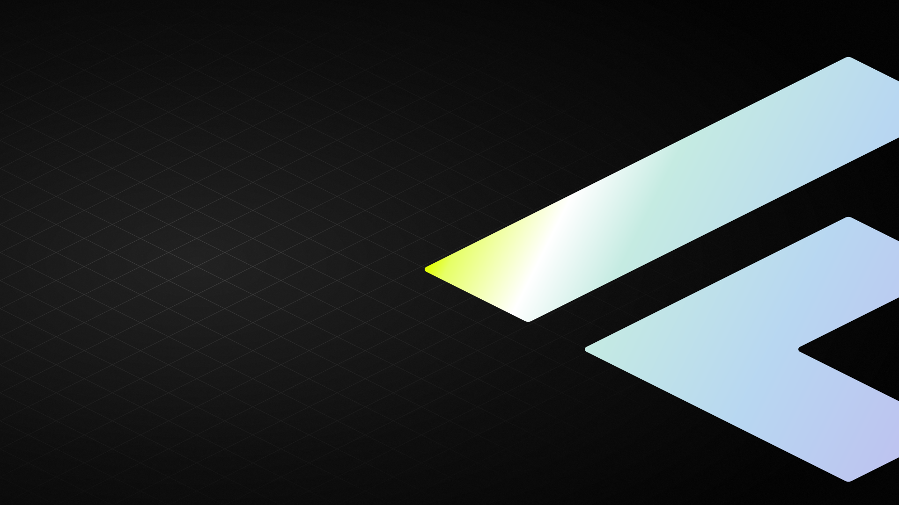
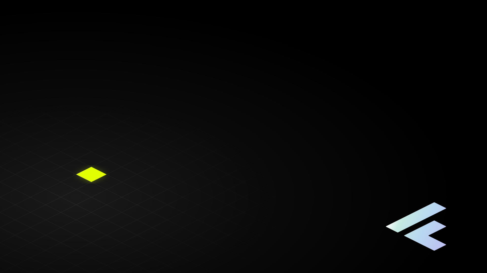

Foundations · 13
The Field
The isometric lattice, made a surface. The site has said since its first line that it stands on a data space rather than on a sheet of paper, and until now it drew no space at all. The field is the space: one rhombus, tiled edge to edge, lit where the reader is looking and gone everywhere else.
Where this comes from
The manual's Raster > Grafische Projektion > Isometrie-Raster plate is not a diagram of the isometry. It is a ground: a rhombic lattice running to all four edges of the page, with the cube, the cylinder and a dotted wireframe standing on it. Every spatial object in this brand is constructed on that lattice — Illustration builds the four process objects out of it, Plot steps its columns along it, the icon set draws its keylines on it. The one thing the lattice had never been was visible.

Lit
The variant a whole section takes. Scroll the page and the pool of light travels down the surface, so the lattice materialises ahead of the reader and dissolves behind them. A floor that is always lit the same way is a printed floor.
.cf-ground .cf-ground--lit
<section class="section cf-ground cf-ground--lit"> <!-- nothing else changes: no wrapper, no size, no spacing --> </section>
.cf-ground, and it was .cf-field for
one release.
The form component has owned .cf-field since it was written, with a
whole __label / __input / __textarea /
__select family under it and a --invalid modifier beside
the --lit one. Declaring the ground under the same name put this
::before behind every row of the contact form, so the lattice ran
under the placeholder of every input — the one place in the system where a busy
ground is unreadable rather than atmospheric, and a collision no page could opt
out of.
The material keeps the name. The tokens are all --field-*, this page
is still The Field, and the field is what the lattice is. What
changed is the class, which names what it does to an element rather than what it
is made of: it puts the element on the ground.
→ Forms
The same material on an inverse surface. The ink inverts with everything else — white at the same tenth.
[data-theme="inverse"]
Construction
One rhombus, --field-unit wide and half that tall — which is what 2:1
means, and the same cell every isometric object in the system is cut from. 96 × 48 at
rest, and both of those are rungs of the space scale
(--space-24, --space-12), so the lattice is commensurable with
the layout rather than merely near it.
Two gradients, one stop list
A repeating-linear-gradient paints bands perpendicular to its own
gradient line. The two families of lattice edges are the 26.57° rhombus edge read off
each axis — screen slope +1⁄2 and −1⁄2 — so
the gradient lines that draw them are 26.57° and its mirror.
| Family | Gradient line | Bands run at | Token |
|---|---|---|---|
| Descending | 26.57° | 26.57° below the horizontal | --field-rake |
| Ascending | 153.43° = 180° − 26.57° | 26.57° above the horizontal | --field-rake-mirror |
The mirror is written as the subtraction and not as 153.43deg, so it cannot
drift away from --angle-b. Material and angle are declared apart for the
same reason the foil declares them apart: the stop list is
what the lines are made of, the rake is what they are crossed at, and writing them
together is how a value comes to exist twice.
The step is derived, not chosen
The perpendicular distance between two adjacent parallel lattice lines is the cell width over √5 — 42.93 px at a 96 px cell. This is the one number that cannot be approximated: get it slightly wrong and you do not have a slightly wrong grid, you have two families of lines that no longer meet at a lattice point. It is therefore computed.
--field-step: calc(var(--field-unit) / 2.2360679775); --field-half: calc(var(--field-step) / 2);
Why a gradient and not a tile
The lattice tiles perfectly as an X inside a cell-by-half-cell box — both diagonals run
on unbroken across the seams — and a tiled SVG with a background-size would
be four lines shorter. It is still wrong here: scaling a tile scales its stroke, and
1 px contour at every size means a device pixel everywhere else in this system.
Every drawn thing in it carries vector-effect: non-scaling-stroke for exactly
this reason. A gradient stop measured in px stays 1 px however large the cell is set.
The wallpapers below are the deliberate exception, and they use the tile: a wallpaper is an image rather than a UI surface, so its contour is supposed to scale with the picture. A hairline pinned to one device pixel would disappear on a 5K screen.
Half a pixel of antialias
A hard stop on a diagonal is a hard diagonal edge. Gradients are evaluated per pixel and a
zero-width transition has no partial coverage to hand out, so the hairline stair-steps.
--field-edge is half a pixel of ramp either side, which gives each pixel a
fraction and resolves the line. The line sits in the middle of its period so both edges
are soft and the wrap from one period to the next happens in transparency, where there is
nothing left to alias.
--field-unit: 3rem — 48 × 24--field-unit: 12rem — 192 × 96Both are drawn at the same 1 px. That is the whole argument for the gradient.
Ink — a ceiling, not a taste
The field is decoration that text is allowed to cross, so its ink is capped by the worst
thing that has to survive crossing it: --text-secondary at 14 px, which owes
4.5:1 and sits on CF-Grau at the top of the page wash. Measured on the composited value
under the line, not on the average over the cell — a glyph either has a lattice line
behind it or it does not.
| Field ink | Surface under the line | --text-secondary | Body copy | |
|---|---|---|---|---|
| black 0.10 | #BABABA | 4.71:1 | 10.8:1 | shipped |
| black 0.12 | #B6B6B6 | 4.51:1 | 10.4:1 | no margin |
| black 0.16 | #AEAEAE | 4.15:1 | 9.5:1 | fails |
The white end of the wash puts the same secondary label at 7.33:1 and the inverse theme puts it at 9.46:1, so CF-Grau under the darkest line is the whole story — as it usually is on this site.
The light
A floor is only visible where something lights it. .cf-ground--lit masks the
lattice with one 2:1 ellipse — the isometric circle, the same shape
.material-bloom--iso is — and slides it down the surface as the reader
passes.
| Value | Why | |
|---|---|---|
| Pool | 72 × 36 rem | A length, not a percentage, for the reason --scrim-reach is one: the pool is a fixed object in the world and the section it lies on is not. closest-side on a box that shape gives radii of 36 and 18 rem — 2:1 by construction rather than by a second number. |
| Falloff | 0.45 at 46 % | Full ink through the middle third, then out. The same plateau the wallpapers use. |
| Travel | −20 % → 120 % | Keeps the pool at the middle of the viewport. When a section first crosses the bottom of the screen the reader's eye is above its top; by the time it leaves, below its bottom. |
| Across | 0 % → 100 % | Where the reader is standing, not where the section is. The travel above is the vertical half of one model; this is the other half, and it is the only quantity here a stylesheet cannot obtain. → The Line of Sight |
| At rest | 50 % / 50 % | The pool at the middle of the surface, the reader square to it. Every path that cannot run the animation lands here — including every touch device, which never gets the horizontal half at all. |
Scrubbed off a view() timeline, so it tracks the reader's hand and runs
backwards when they scroll up — the commitment
Motion already makes for everything else in the system that
moves. No script. Below about 1150 px of viewport the pool is wider than the screen, so
the reader sees a band of light crossing the floor rather than a pool sitting on it; that
is what a light source further away than the room is wide actually does, and it is why
the pool is not clamped to the viewport.
Sideways, there is nothing to scrub. A view timeline reports how far
the section has travelled past the reader, and a section does not travel sideways; the
pool's x is therefore the only value in this chapter that is measured
rather than derived, written by assets/js/cf-sight.js on the handful of lit
grounds that are on screen. It is optional and it rests at 50 %, so a page without the
script — or read on a phone, or under reduced motion — draws the pool exactly where this
chapter drew it before the file existed.
Anatomy
| Token | Rest value | What it sets |
|---|---|---|
--field-unit | var(--space-24) — 96 | Rhombus width. The height is half of it, by construction. |
--field-line | var(--stroke-1) — 1px | Contour weight. A device pixel at every unit. |
--field-edge | 0.5px | The antialias shoulder either side of the line. |
--field-step | unit ÷ √5 — 42.93 | Perpendicular distance between adjacent parallel lines. Derived. |
--field-half | step ÷ 2 | Where the line sits inside its period. |
--field-ink | rgba(0,0,0,.10) | The contour colour. Inverts to white 0.10 under [data-theme="inverse"]. |
--field-rake | var(--angle-b) | Gradient line of the descending family. |
--field-rake-mirror | calc(180deg − var(--angle-b)) | Gradient line of the ascending family. |
--field-stops | 6 stops | The material. Used by both rakes, so it exists once. Composed on .cf-ground::before, not at :root — see below. |
--field | 2 gradients | The finished lattice image. Composed alongside the stop list. |
--field-pool-w / -h | 72rem / 36rem | The pool of light, 2:1. |
--field-bloom | radial, closest-side | The mask the lit variant wears. |
--field-light-y | 50 % | Where the pool sits down the surface. Registered, so it can travel. |
Markup
<!-- the ground, edge to edge — for a bounded object --> <figure class="cf-ground"> … </figure> <!-- the ground under a travelling light — for a whole section --> <section class="section cf-ground cf-ground--lit"> … </section> /* a denser or looser floor, per element */ <div class="cf-ground" style="--field-unit: 12rem"> … </div>
The class adds a pseudo-element at z-index: -1 and an
isolation: isolate on the box. Painting order puts that layer above the
element's own background and below every scrap of its content, which is where the
material stack says a contour belongs. Nothing about the box changes: no size, no
spacing, no border. It is a pseudo-element rather than a background because the lit
variant is masked, and a mask on the element would mask its text with it.
:root. A
custom property is substituted at computed-value time on the element that
declares it, so a --field-stops written at :root
resolves --field-ink against the light theme's black and inherits that
literal into every inverse section — a black lattice on Schwarz, which is a lattice
nobody can see. Measured exactly that way before it was moved. The pseudo-element
inherits --field-ink from its originating element instead, so the same
rule draws in ink or in light without either theme knowing about the other. Same shape
.text-foil uses for --foil-image, and the reason
--foil-stops can live in tokens.css while this one cannot:
none of the foil's stops is theme-dependent.
Rules
- One field per screen. Two lit sections in view at once give the reader two floors at two heights, and the isometry stops meaning anything.
- Never behind running text. The contrast floor holds, but an article column is read for minutes and a lattice under it is a distraction the measurement does not capture. Section furniture, figures and plates only.
- Never under a photograph or the hero video. The field is the ground; an image is an object standing on it. A lattice showing through a picture is a printing error.
- It stays solid. The four line types govern individual lines. A dashed field would need a second pattern running along the lines, which dashes one family down its length and the other across it — the same rule applied twice, looking like two.
- Do not respace the layout to fit it. The lattice phase is set by the box the gradient is painted in, so it does not register with the column grid and is not meant to. Chasing that alignment moves content to suit decoration.
Three ways to get it wrong
- Making it darker so it reads better. The table above is the reason it is a tenth. If the field is invisible on a screen it is because the section wanted the unlit variant, not because the ink is too light.
- Putting lime in it. See the warning above. The field is the one surface in the system that must not become the thing you look at.
- Setting the step by eye. Any value other than the cell over √5 gives
two families of parallel lines that intersect somewhere other than a lattice point,
which is a moiré rather than an isometry. Change
--field-unit; never--field-step.
Wallpaper
The manual carries a wallpaper chapter and the web implementation had never used it. The field is what it was waiting for: a surface with no text on it, no layout under it and nothing to be read over is the one place the lattice can run at full strength.
Three files, hand-drawn SVG, no dependency and no build step. They are resolution
independent, so one file covers every screen of its shape — 1080p through 5K on the 16:9
pair. Everything in them is a system part: the ground is the neutral ramp or the page's
own --wash-stops, the lattice is the tile, the mark is filled from the light
family, and each file spends exactly one light moment.
| File | Lattice ink | The mark | The one light moment |
|---|---|---|---|
| Feld, dark | white 0.16 | --gradient-spectrum, cropped by the right edge |
The lime end of the ramp, inside the mark. So there is no lit cell on this floor. |
| Feld, light | black 0.14 | --foil-ink-stops — the lit foil measures 1.1:1 on CF-Grau and would not be there |
One lattice face under the mark: the object's own footprint. |
| Videocall | white 0.10 | --foil-stops, small, bottom right |
One lattice face, clear of both the sitter and the name strip. |
The two desktop files break the 0.10 ceiling on purpose. That number is set by the worst text that has to stay readable across a lattice line, and nothing is read over a wallpaper — so the ceiling does not apply and the binding number is the one where the floor is legible at arm's length. The video-call file keeps 0.10, because something is in front of that one.
All three are dithered, and not all three at the same strength
A wallpaper is the worst case the page wash already
solved: a member of the light family painted across a whole screen with nothing over it
to hide what 8-bit sRGB cannot resolve. The light file was drawn with the system's grain
in it. The two dark files were not, and measured on the rendered frame
they were the two worst-banded surfaces the system ships — 53.1 % of the video-call
picture sat in a flat plateau of eight pixels or more, one of which ran the full 1080 px
height of the frame. Both carry the grain now, primitive for primitive with
--grain.
| File | Grain | Banded area before | after |
|---|---|---|---|
| Feld, dark | 4 % | 42.9 % | 9.5 % |
| Feld, light | 8 % | drawn with it; 0 plateaus across the ramp | |
| Videocall | 4 % | 53.1 % | 0.6 % |
Four per cent and not the wash's eight, because grain lifts the floor. Its own mean is added light wherever it lands. On a ramp that ends at white that costs nothing; on a ground whose whole job is to stay at the black end of the neutral ramp it is the objection. So the strength is the least that clears the banding rather than the wash's number: on the video-call frame 8 % takes the banded area from 0.6 % to 0.4 %, which cannot be seen, and takes mean luminance from 12.84 to 16.31, which can.
Feld, dark keeps 9.5 % and that is deliberate. The residual does not move at any grain strength because it is not on the ground — broken down by value it is the white-to-Glas end of the spectrum ramp filling the mark, which is a large enough object for its own legs to band. The mark is drawn above the grain layer, here and in the light file, because grain is a property of the base wash and not of anything standing on it. Dithering the mark too is a designer's call, not a routine's: it is also this file's one light moment, and grain over lime dulls the one thing the picture is for.
The dark file fills its mark with the full spectrum rather than the foil, and that is the manual's own move: the app icon on Farben > Anwendung is a black plate whose mark carries the light ramp while the plate stays black. A wallpaper is that object at the size of a screen. The system already reads the plate that way for the solid button, whose label is filled rather than coloured.

{kind=link}


{kind=link}
The one that has a person standing in front of it
The video-call file gives three things up on purpose, and they are worth stating because they are the difference between a background and a distraction.
| Given up | Why |
|---|---|
| The middle of the frame | Everything sits outside 660–1260 px in x, the column a head and shoulders occupy in a 16:9 frame. Segmentation is approximate and it fails at the hair and the shoulders; structure behind that edge reads as a torn cut-out. |
| Brightness | The pool tops out at the same 0.10 white the CSS field uses and the ground never leaves the black end of the neutral ramp. A background that out-lights the sitter is the failure everybody notices. |
| The corner the mark would want | Bottom right, because every conferencing client puts the participant's name bottom left. |
What is not in them
- No type. Publica Sans is not licensed and Geist is not embedded, so any lettering would either ship a font or render in whatever the viewer has. The mark carries the brand on its own.
- No raster. Nothing in the set is a photograph or an exported PNG, so there is no resolution to outgrow and no file to re-cut per device.
- No oklab waypoint, and none is missing. The
#DBFC60stop exists for lime-to-Glas legs, where the sRGB and oklab paths diverge by ΔE 0.044. No ramp in the set has one: the two foils carry no lime at all, and the spectrum's lime runs to Weiss, then Weiss to Glas — the leg the system already leaves in sRGB deliberately, at ΔE 0.00045. → Colour - No gradient in canvas coordinates. Every ramp is written in the
mark's own 600 × 480 space, because a
userSpaceOnUsepaint server is resolved where it is referenced — so the group's transform moves the gradient with it. Written the other way, all three ramps landed off the mark and every glyph clamped to its first stop. This is the trap the README lists under three things that vanish quietly, and it caught this set too.